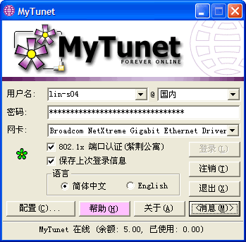
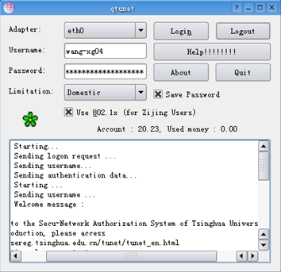

| 最新版本2005.12.31 |
| 简介 |
| 下载与安装 >简洁版 完整版 Windows Vista版 |
| 常见问题 |
| 联系 |
| 声明 |
| 友情链接 |
据悉，学校在一段时间之后将启用新的校园网登录系统，并采用新的认证协议。届时，当前的 MyTunet 将不再适用。如果我们有精力且认为有意义开发新版本 MyTunet，我们可能还会继续对它进行更新。否则，我们将不再提供 MyTunet 的更新。 Windows Vista 适用的 MyTunet 版本请从此处下载。 谢谢您对 MyTunet 一如既往的认可与支持。 |
 简介
简介
什么是 MyTunet？ |
|
MyTunet 是一个能方便你使用清华大学校园网的工具。有了 MyTunet，登录校园网、切换登录账号等任务将变得非常轻松。你不再需要先注销，改登录类型，输入新的用户名，输入新的密码――MyTunet 将自动为你的完成这些繁琐的步骤。如果你是一名住在紫荆公寓的本科生，并且使用着台式电脑，那么你更可以启用“熄灯提醒”功能。开启此项功能后，每到熄灯前 5 分钟，会弹出一个对话框提示你关机。 |
MyTunet 的特点 |
|
MyTunet / qtunet 界面截图 |
|   |
下载与安装
如何安装 |
MyTunet 无需安装。只需到 MyTunet 维护网站下载压缩包文件，解压缩到任何目录后即可运行。当然，我们建议您将它放在 C:\Program Files\MyTunet 中。 今后 MyTunet 如需升级，请将旧版本文件删除，然后将新版本文件解压至原处即可。 请注意：MyTunet 需要向注册表中记录少量信息（仅限于您的帐号、设置等），因此并不是严格意义上的绿色软件。 |
最新版本 |
MyTunet for Windows 简洁版 [2005年12月31日] [944 KB] MyTunet for Windows 完整版 [2005年12月31日] [1.14 MB] MyTunet for Linux [2005年12月09日] [795 KB] 请先阅读说明 qtunet for Linux 图形界面 [2005年12月09日] [0.99 MB] 请先阅读说明 |
驱动程序 |
以下内容来自 http://www.winpcap.org。WinPCap 是 MyTunet 的驱动程序。通常情况下，MyTunet 会自动调用驱动程序，因此您无须单独下载、安装以下文件。只有当您遇到严重的错误时才需要手动安装。 WinPCap 3.1 安装文件 [456 KB] 稳定版本，但不支持 64 位操作系统。本文件来自 http://www.winpcap.org/install/bin/WinPcap_3_1.exe。 WinPCap 3.2 alpha1 安装文件 [475 KB] |
常见问题
使用 MyTunet 安全吗？ |
所有网络通信，MyTunet 与官方 TUNet 完全一致。在网络通信的数据流上， MyTunet 和官方 TUNet 的安全性等价。 保存密码登录时，MyTunet 并不保存用户的原始密码。原始密码在第一次被输入后就被立刻从内存中销毁，登录全过程中不再需要原始密码（官方 TUNet 也是如此）。当然， MyTunet 必须保留通过原始密码生成的一些信息，MyTunet 会把这些信息通过 Windows Crypt 加密系统进行加密，加密方式是与当前 Windows 用户相关联的。也就是说，只有当前的 Windows 用户才可获得这些敏感信息，并可保证这些信息不被恶意窃取。 |
MyTunet for Windows 的状态图标具体是什么含义？ |
|
如何使用多帐户快速切换功能？ |
首先明确 MyTunet 中的几个概念：
如果您想进一步弄清这个问题，只要试一试就可以了:) 现在切入正题： 1. 添加/删除/修改 用户帐户。 点“配置”按钮，进入“配置”对话窗。其中“帐户列表”就是用于管理用户帐户的。 建立新帐户：在“帐户”输入框里输入帐户名（这个随便了，可以自己起名字）。然后输入“用户名”“密码”等信息，并点“保存”，这个用户帐户就建立了。 删除帐户：在“帐户”下拉列表里选一个想删除的用户帐户，然后点“删除”，就这么简单。 修改帐户：在“帐户”下拉列表里选一个想修改的用户帐户，然后修改所需要修改的信息，修改完后千万别忘了点“保存”哦！ 2. 快速切换帐户登录。 方法一：在 Windows 任务栏托盘区（就是右边的那些图标区，用鼠标右键点 MyTunet 的图标，在“帐户列表”里选一个就可以了。 方法二：在 MyTunet 主界面里也可以切换登录帐户。点“用户名”下拉框，然后可以看到一些帐户列表，选一个，则 MyTunet 会把选择的这个用户帐户的登录信息拷贝成当前帐户。然后再点登录就可以了。 两种方法有什么不同呢？如果您已经登录了，方法一不需要注销就可以直接切换，而方法二则必须先点“注销”后才能再“登录”。 |
MyTunet 运行时提示“无法找到 mytunetdll.dll” ，怎么处理？ |
可能是因为驱动程序没有成功安装造成的。 虽然 MyTunet 会自动尝试安装驱动程序，但在个别机器上仍可能会安装失败。可以尝试如下解决方案： (1) 下载最新的 MyTunet 并解压缩到新的目录（不要覆盖原来的，否则容易出现问题） (2) 如果仍然有问题，请到 http://www.mytunet.com 下载 WinPCap 的驱动程序并安装 （注：这个文件的一个较旧版本在官方 TUNet\drivers 目录中也存在，理论上，安装后应该解决所有问题） (3) 如果还有问题，可以手动删除以前安装的驱动程序： %windir%\system32\drivers\npf.sys %windir%\system32\wpcap.dll %windir%\system32\packet.dll %windir%\system32\wanpacket.dll然后再安装 WinPCap 的驱动程序，或者运行 MyTunet 以自动安装驱动程序。 (4) 如果仍然有问题，请联系我们。 |
MyTunet 运行时提示“无法获取网卡列表” ，怎么解决？ |
很可能您正在使用 64位 AMD 处理器和 Windows XP，并不幸地遇到了 MyTunet 的 bug。 请及时将错误的具体情况反馈给我们。或者，您可以简单地从 http://www.mytunet.com 下载一份 WinPCap for AMD64 的驱动程序。 |
什么是服务？如何把 MyTunet？安装为服务？ |
首先解释一下什么是服务（如果您很熟悉，请跳过这一段）：服务程序是一种特殊的 Windows 程序，它可以在系统刚启动的时候就被运行。也就是说，哪怕用户还没 登录Windows，只要开机，服务程序就会自动运行。这种程序一般用于提供网络服务等，所以就叫“服务（Service）”了。 MyTunet 目前支持安装为一个服务，其服务程序是 MyTunetSvc.exe，安装成功后服务名是“ MyTunetSvc”。 当然，您并不需要知道它到底是如何工作的，在 MyTunet 的主界面中，您可以轻松完成对 MyTunet 服务的各种操作。 先说明一个基本问题： MyTunet 的普通应用模式和服务模式是不能同时启用的。也就是说，如果你安装了 MyTunetSvc 服务，那么 MyTunet 的所有操作都会依靠服务来进行，而不再是在主程序里进行操作了。 并且，安装 MyTunetSvc 服务后，与普通模式会有以下不同：
安装 MyTunetSvc 服务的操作很简单，点“配置”，再点“安装 MyTunet 服务”即可。服务安装后，即可在 MyTunet 主程序中对服务进行控制。 并且，只要运行了 MyTunet 主程序，服务会把信息反馈给主程序。如果 MyTunetSvc 服务没找到正在运行的 MyTunet 主程序，它将忽略反馈信息。 说明：除非您确实需要服务所提供的这些功能，强烈建议您不要采取服务模式来连网！ |
联系
如果您发现了软件的 bug，或还有其他不明白的事项，都可以联系我们的技术支持人员，我们将尽最大努力为你解释清楚。如果您对本软件有什么建议或新奇的想法，也请告诉我们。推荐使用 Google Talk 与我们联系。 Chice , Frank |
MyTunet 软件声明
有鉴于 MyTunet for Windows，MyTunet for Linux 及 qtunet 等软件（以下统称"MyTunet"）功能的特殊性，MyTunet 将无可避免地与您或您的计算机产生直接或间接的联系，故特此说明 MyTunet 的使用条款，请您务必仔细阅读。如果您不同意下面条款中的任何一项，请不要开始或立即停止使用 MyTunet。一旦您使用了 MyTunet 软件，则意味着您对本声明的全部内容的接受与理解。 著作权 MyTunet 的编写是以研究和学习为目的的，著作权归属软件作者所有。著作权人保留所有权利。 安全与隐私 MyTunet 为了使您的电脑能够登录到清华大学校园网，需要以某种形式储存您的个人信息于 Windows 注册表中（MyTunet for Windows），或有关配置文件中（MyTunet for Linux 及 qtunet）。这些信息除以上说明的位置外，并不保存在其他位置。这些信息包括（但不限于）您的网卡型号、IP地址等一般信息，也包括您的校园网帐号、密码等敏感信息。在登录网络的过程中，上述信息会在网络中传输。从技术上这些信息不会被他人利用，但 MyTunet 项目组并不对此作任何保证。 MyTunet 采用可能与"清华大学校园网官方客户端工具"（简称"TUNet"）相同的网络协议。根据 TUNet 官方网站中的说明，清华大学校园网采用的登录认证协议、计费系统是安全的。理论上，MyTunet 的安全性与 TUNet 等价。 免责条款 MyTunet 项目组致力于使 MyTunet 更加安全、易用和具有更强的兼容性。但是 MyTunet 项目组不保证MyTunet 可以在任何计算机上正常地运行。除此以外，MyTunet 项目组对可能因使用 MyTunet 造成的任何其他软硬件问题不承担责任。 MyTunet 项目组有权利但无义务，改善或更正 MyTunet 中任何部分的错误或疏失。 |
友情链接
感谢 net9.org 提供主页空间。界面设计参考了 Snaileo 做的 Alumni 校友录客户端软件主页。
|